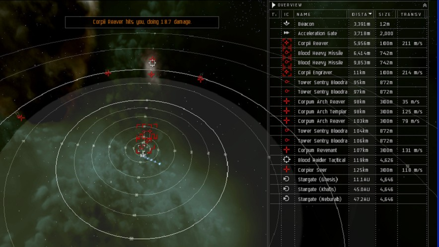
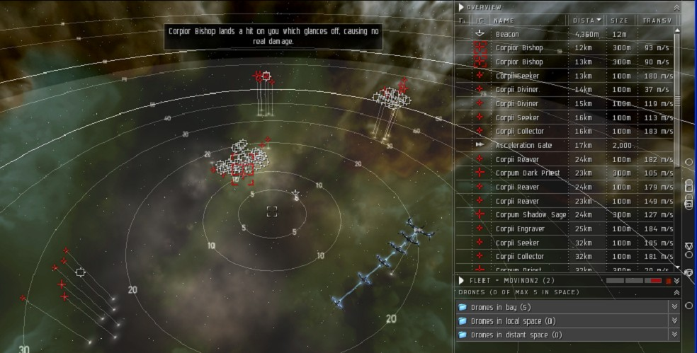
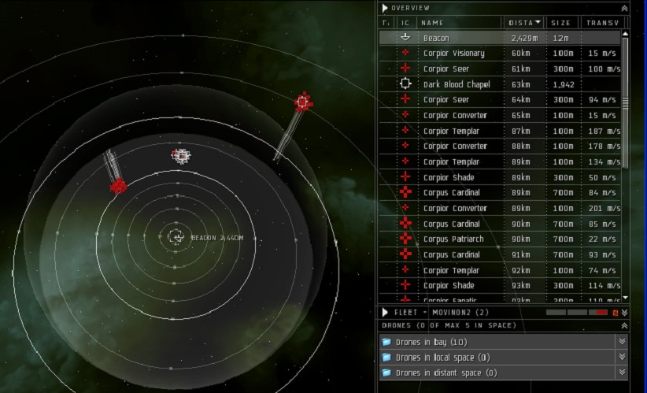

Angel Strike, Level 3
For part 1-4, click here
Last edited by DesmontMcCallock
Sat, 14 Jul 2012 07:30 UTC
Sat, 14 Jul 2012 07:30 UTC
Part 5 - Incriminating Evidence
Faction: Darkonnen
Mission type: Encounter
Space type: Deadspace with gates
Damage dealt: EM, Thermal
Recommended damage dealing: EM, Thermal or Explosive, Kinetic
Pocket 1
Group 1, 10km, Aggro
3 Darkonnen Veteran2 Darkonnen Gang Leader
Group 2, 80km
3 Darkonnen Veteran2 Darkonnen Gang Leader
1 Darkonnen Overlord
Bunch of collidable structure
- Some ammo loot from pressure silo.
- Some ammo loot from cargo rigs.
- Some trade goods from habitation module.
Part 6 - The Flu Outbreak
Mission type: Courier
110 units of antibiotic (22 m3)
Part 7 - The Secret Meeting
Faction: Blood Raider
Mission type: Encounter
Space type: Deadspace with gates
Damage dealt: EM/Thermal
Recommended damage dealing: EM/Thermal
Pocket 1
Warp in first gate, no aggro, turns out it the blood raiders who are guilty.
As the agent directive was only to talk, did not engage and went through warp gate.
Pocket 2
4 groups at warp in, range 20-35km, no instant aggro.
Start with middle group (transports), no aggro from other groups. Drops cargo container, get the 5 prisoners.
That's enough to complete the mission, or you can hang around and take out the rest.
3 Blood raider transports
9 cruisers (Corpior Seer, Corpior Bishop, Corpior Shade, Corpum Revenant, Corpum Arch Templar)
8 frigates (Corpii Reaver, Corpii Engraver)
Part 8 - Defend the Civilian Convoy
Faction: Blood Raider
Mission type: Encounter
Space type: Deadspace with gates
Damage dealt: EM, Thermal
Recommended damage dealing: EM, Thermal
Pocket 1
Instant aggro @ 20 km
2 Corpii Reaver
3 Corpii Engraver
3 Corpior Shade
Bunch of large collidable objects, no loot.
Part 9 - Retrieve the Prisoners
Faction: Blood Raider
Mission type: Encounter
Space type: Deadspace
Damage dealt: EM/Thermal
Recommended damage dealing: EM/Thermal
Pocket 1
Warp in, 4 groups, 10km, 2@35km, 60km)
Initial aggro by 10 km (2 corpum sage)
Total in room (Corpii and Corpum)
8 cruisers
10 frigates (didn’t see any web or scramblers)
Kill everything till get cargo drop with 5 prisoners.
Part 10 - The Final Battle
Faction: Blood Raider
Mission type: Encounter
Space type: Deadspace with gates
Damage dealt: EM/Thermal
Recommended damage dealing: EM/Thermal
This is the most challenging level, first time you will come up against battleships in this storyline.
Pocket 1
First jump, NPC's are spread out (6km, then 95-125km).
Initial aggro by 2 frigates and 2 heavy missile batteries.
After first group, need to kill 5 cruisers at long range, you don't have to shoot the 5 towers (blood raider) to jump.

Pocket 2
4 groups at 13km, 25km, 35km)
Initial aggro at warp in by middle group, lots of collidable structures.
Don't have exact counts, each group 2-4 cruisers and 2-4 frigs.
The usual mix of corpii and corpum

Pocket 3
3 groups @60 and @90km, this time battleships have come to the party.
No aggro on warp in. Attack each group, no aggro from others.
Group 1
1 Corpior Visionary2 Corpior Seer
1 Corpior Converter
Group 2
3 Corpior Converter3 Corpior Templar
3 Corpus Cardinal
1 Corpus Patriarch
1 Corpior Shade
1 Corpior Fanatic
Group 3
1 Corpus Harbinger4 Corpus Archbishop
4 Corpior Converter
1 Corpior Templar
Destroy the Dark Blood Chapel and pick up 3 implants.

CategoryMissions
CategoryLevel3